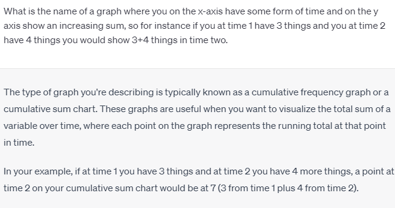

I can describe the concept but I don't know it's name
2023-05-15
My current favorite use of the chat based AI:s is when I find myself thinking of a thing. I can describe the thing in somewhat vague general terms but I don't know it's name. Previously this has been very hard to search for since you typically need to know the term to get good search results.
So far chatgpt has been very good at translating my description of the thing to the actual name of the thing.
